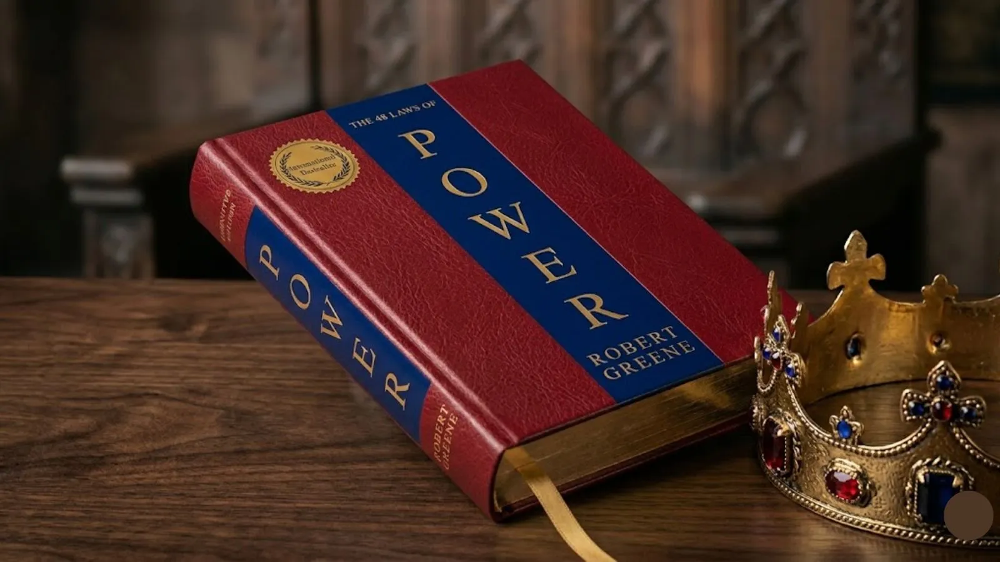

द 48 लॉज़ ऑफ पावर” रॉबर्ट ग्रीन की एक प्रसिद्ध किताब है जो शक्ति, रणनीति और नेतृत्व के 48 नियमों को समझाती है। इस पुस्तक में वास्तविक जीवन के उदाहरणों के माध्यम से बताया गया है कि कैसे आप अपने प्रभाव को बढ़ा सकते हैं और सही निर्णय लेकर सफलता प्राप्त कर सकते हैं।
📥 Download Now